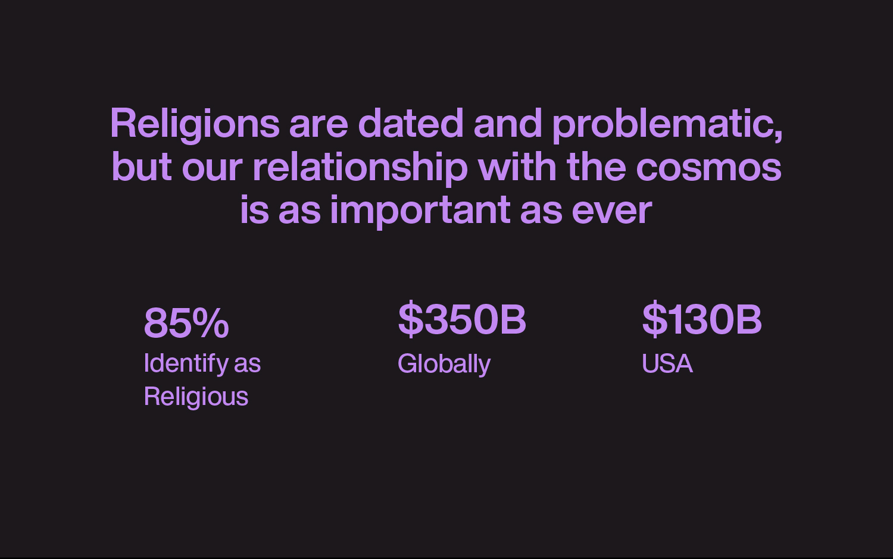
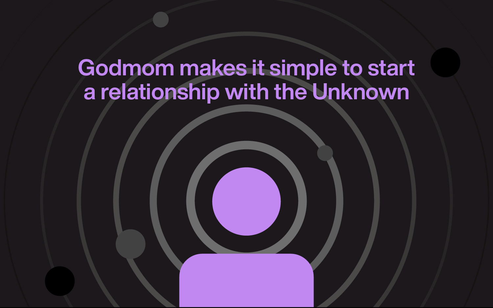

Deck
2016-2018

The landscape and everything in it seems to be accelerating. Tech speeding up, wealth disparity speeding up, fear of the future on the rise. Acceleration itself, increasing. All except the human spirit. Our spirit, our sense of purpose, seems to be hiding behind the sciences that support us, looking embarrassed of itself, weighed down by the fear that we've fried our brains with feeds while breaking our planet with industry.
